library(phyloseq)
library(tidyverse)
library(magrittr)
library(rstatix)
library(pander)
library(here)16S Data Analysis Part I
We’ve inferred and classified amplicon sequence variants (ASVs) using the dada2 package.
Now let’s do some exploratory data analysis (EDA) using the phyloseq package and other tools.
EDA mindset
Exploratory mindset:
- “I’m very curious about my data”
- “It’s unlikely that my data are perfect”
- “I’d like to familiarize myself with the data”
0. Get set up
Load packages
Load some packages including the phyloseq package
To get Help with any function, type a question mark (?) in front of the function name at the Console. For example, type ?dplyr::filter (or ?filter) and hit enter to get Help with the dplyr function filter().
Manage file paths
Show path to the current project
here::here()[1] "/Users/jelsherbini/dev/durban-data-science-for-biology"Show paths to the data we intend to analyze
fs::dir_ls(here("materials/2-workshop2/4-16s-pt1/data"))/Users/jelsherbini/dev/durban-data-science-for-biology/materials/2-workshop2/4-16s-pt1/data/instructional
/Users/jelsherbini/dev/durban-data-science-for-biology/materials/2-workshop2/4-16s-pt1/data/practiceCreate an object containing the path to the instructional data
in_path <- file.path(here("materials/2-workshop2/4-16s-pt1/data/instructional/"))
in_path[1] "/Users/jelsherbini/dev/durban-data-science-for-biology/materials/2-workshop2/4-16s-pt1/data/instructional/"Just for fun, let’s be curious about this object in_path. What type of object is it? How many strings does it contain? How many characters in this string?
class(in_path)[1] "character"length(in_path)[1] 1nchar(in_path)[1] 106We can answer these questions. It’s a character vector containing 1 string consisting of 106 characters.
We’ll use this object to construct commands for loading our data.
Load instructional data
List the files we intend to load
list.files(in_path)[1] "count_table_instructional.rds" "sample_data_instructional.rds"
[3] "tax_table_instructional.rds" The count_table and tax_table are the outputs of dada2. The sample_data is a version of the file 05_amplicon_sample_ids_UKZN_workshop_2023.csv that I’ve modified for use here.
Note: An .rds file contains a single R object which has been saved to a file. The file can be loaded back into the R environment using the readRDS() function.
Let’s load the instructional data
sample_df <- readRDS(paste0(in_path, "sample_data_instructional.rds"))
count_tab <- readRDS(paste0(in_path, "count_table_instructional.rds"))
tax_tab <- readRDS(paste0(in_path, "tax_table_instructional.rds"))Note: The paste0() function is a variation of paste() that concatenates strings without any separator.
1. Get to know the data
Familiarize yourself with the data:
- Think about how you would describe or summarize it
- Examine the objects for form, size, and content
- Review and visualize your study design
- Identify any missing data
Sample data
Let’s begin with the sample data.
Glimpse the object using head()
sample_df %>%
head(n = 3) %>% pander()| amplicon_sample_id | amplicon_type | instrument_run | reads_out | pid |
|---|---|---|---|---|
| GUT0003 | study_sample | run1 | 112769 | pid_01 |
| VAG0142 | study_sample | run2 | 73426 | pid_01 |
| GUT0050 | study_sample | run1 | 20211 | pid_01 |
| arm | time_point | sample_type |
|---|---|---|
| placebo | baseline | gut_biopsy |
| placebo | baseline | vaginal |
| placebo | week_1 | gut_biopsy |
Glimpse the object using tail()
sample_df %>%
tail(n = 3) %>% pander()| amplicon_sample_id | amplicon_type | instrument_run | reads_out | |
|---|---|---|---|---|
| 272 | ZYMO.DNA.CTRL.P6.run2 | zymo_mock | run2 | 41915 |
| 273 | ZYMO.DNA.CTRL.P7.run2 | zymo_mock | run2 | 48564 |
| 274 | ZYMO.DNA.CTRL.P8.run2 | zymo_mock | run2 | 38318 |
| pid | arm | time_point | sample_type | |
|---|---|---|---|---|
| 272 | NA | NA | NA | NA |
| 273 | NA | NA | NA | NA |
| 274 | NA | NA | NA | NA |
Does this object contain any missing data? How much?
sum(is.na(sample_df))[1] 40Yes it does.
This object is a data.frame with 274 rows (observations) and 8 columns (variables). We acknowledge the presence of NA values (missing data).
Note: I’ve added a variable sample_df$reads_out containing the total number of reads output by dada2. This variable can be taken from the portion of the dada2 workflow in which reads are tracked through the pipeline.
In our sample data, we see variables describing the amplicons. How many amplicons did we sequence on each run?
sample_df %>%
count(instrument_run, amplicon_type) %>% pander()| instrument_run | amplicon_type | n |
|---|---|---|
| run1 | study_sample | 132 |
| run1 | zymo_mock | 5 |
| run2 | study_sample | 132 |
| run2 | zymo_mock | 5 |
On each instrument run, we sequenced n = 132 study samples and n = 5 mock communities (positive controls).
Here, the mock communities are the ZymoBIOMICS Microbial Community DNA Standard. Later, we’ll use these mocks to assess for batch effects (run1 vs run2).
We also have variables pertaining to the study design. Let’s report the number of participants in the study without counting the NA values associated with the mocks.
Here are two options
length(unique(sample_df$pid)[!is.na(unique(sample_df$pid))]) # Option 1 using base R[1] 44sample_df %>% drop_na() %$% n_distinct(pid) # Option 2 using tidyverse & magrittr[1] 44Which option do you find more readable?
Note: The %$% operator is known as the “exposition pipe operator”. It’s part of the magrittr package and is used to expose the variables in a dataframe to the environment in an expression.
Now let’s review the study design. Often, a visualization works well for this purpose.
Plot our study design
sample_df %>%
drop_na() %>% # Without this line, what happens? Why?
mutate(has_reads = reads_out > 0) %>%
ggplot(aes(x = time_point, y = pid, color = has_reads)) +
geom_point() +
facet_grid(rows = vars(arm), cols = vars(sample_type), scales = "free_y") +
labs(title = "study design", y = "participant_id")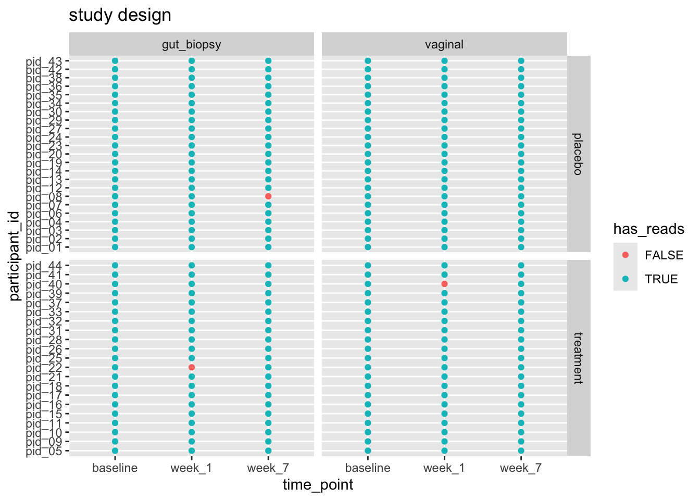
We recall that our study involves 44 participants, randomized to placebo or treatment, who contributed a gut and vaginal sample at baseline (before intervention) and at 1 and 7 weeks after intervention.
We also note that three samples failed to return any reads after processing through dada2. (What happened?)
Let’s make a plot that looks closely at our sequencing yields
sample_df %>%
filter(reads_out > 0) %>%
mutate(sample_type = ifelse(is.na(sample_type), "zymo", sample_type)) %>%
ggplot(aes(x = reads_out, fill = sample_type)) +
geom_histogram(bins = 50) +
facet_wrap(.~instrument_run) +
labs(title = "sequencing yield")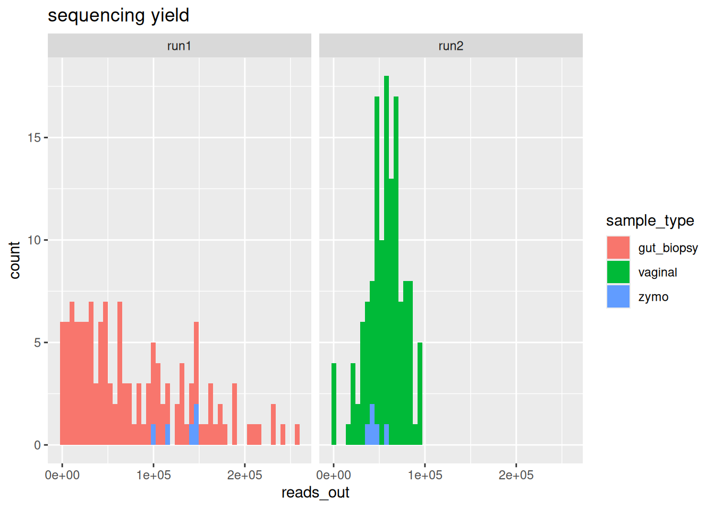
These histograms have very different shapes. If this is surprising or concerning to us, we might investigate why this happened. It’s also clear that we have additional samples with relatively low yield. How would you quickly modify the code above to display only those samples with fewer than 500 reads?
When our work involves batches, we always want to include replicate samples (here, the zymo mocks) that allow us to assess for batch effects. Looking at the plot above, why was this extra important in the context of this study?
Finally, we can compute some summary statistics for this variable sample_df$reads_out for each instrument run
sample_df %>%
group_by(instrument_run) %>%
get_summary_stats(reads_out, type = "five_number") %>% pander()| instrument_run | variable | n | min | max | q1 | median | q3 |
|---|---|---|---|---|---|---|---|
| run1 | reads_out | 137 | 0 | 257270 | 24926 | 62910 | 124354 |
| run2 | reads_out | 137 | 0 | 96147 | 45022 | 57113 | 69108 |
In the code above we’ve used the function get_summary_stats() from the package rstatix. This function allows for different types of summary statistics (we’ve used type = “five number”). We note that we have a median of around 60k reads per sample.
Count table
Now let’s look at the count table. This table contains the count of each amplicon sequence variant (ASV) in each sample. It will become the core of our phyloseq object.
Describe the count table
class(count_tab)[1] "matrix" "array" nrow(count_tab)[1] 271ncol(count_tab)[1] 6422sum(is.na(count_tab))[1] 0The count table is a matrix (a 2D array) with 271 rows and 6422 columns. There is no missing data. Based on these numbers, it seems that rows are samples and columns are ASVs.
Let’s make sure. How are the rows and columns named (labelled)?
What are the row names?
rownames(count_tab) %>% head(n = 3)[1] "GUT0001" "GUT0002" "GUT0003"In this count table, the rows are samples. They are named using the amplicon_sample_id.
Is every sample in the count table listed in the sample data?
sample_df %>%
filter(!amplicon_sample_id %in% rownames(count_tab)) %>% pander()| amplicon_sample_id | amplicon_type | instrument_run | reads_out | pid |
|---|---|---|---|---|
| GUT0071 | study_sample | run1 | 0 | pid_08 |
| GUT0117 | study_sample | run1 | 0 | pid_22 |
| VAG0280 | study_sample | run2 | 0 | pid_40 |
| arm | time_point | sample_type |
|---|---|---|
| placebo | week_7 | gut_biopsy |
| treatment | week_1 | gut_biopsy |
| treatment | week_1 | vaginal |
# And this difficult-to-read command should evaluate to TRUE
sum(rownames(count_tab) %in% sample_df$amplicon_sample_id) == nrow(count_tab)[1] TRUEYes, all of the samples in the count table are present in the sample data, except for the three samples that failed (and that’s okay, we can leave these three samples in the sample data).
What are the column names?
colnames(count_tab) %>% head(n = 3)[1] "TAGGGAATCTTCCACAATGGACGCAAGTCTGATGGAGCAACGCCGCGTGAGTGAAGAAGGGTTTCGGCTCGTAAAGCTCTGTTGTTGGTGAAGAAGGACAGGGGTAGTAACTGACCTTTGTTTGACGGTAATCAATTAGAAAGTCACGGCTAACTACGTGCCAGCAGCCGCGGTAATACGTAGGTGGCAAGCGTTGTCCGGATTTATTGGGCGTAAAGCGAGTGCAGGCGGCTCGATAAGTCTGATGTGAAAGCCTTCGGCTCAACCGGAGAATTGCATCAGAAACTGTCGAGCTTGAGTACAGAAGAGGAGAGTGGAACTCCATGTGTAGCGGTGAAATGCGTAGATATATGGAAGAACACCGGTGGCGAAGGCGGCTCTCTGGTCTGTTACTGACGCTGAGGCTCGAAAGCATGGGTAGCGAACAGG"
[2] "TGAGGAATATTGGTCAATGGGCGAGAGCCTGAACCAGCCAAGTAGCGTGAAGGATGACTGCCCTATGGGTTGTAAACTTCTTTTATAAAGGAATAAAGTCGGGTATGGATACCCGTTTGCATGTACTTTATGAATAAGGATCGGCTAACTCCGTGCCAGCAGCCGCGGTAATACGGAGGATCCGAGCGTTATCCGGATTTATTGGGTTTAAAGGGAGCGTAGATGGATGTTTAAGTCAGTTGTGAAAGTTTGCGGCTCAACCGTAAAATTGCAGTTGATACTGGATATCTTGAGTGCAGTTGAGGCAGGCGGAATTCGTGGTGTAGCGGTGAAATGCTTAGATATCACGAAGAACTCCGATTGCGAAGGCAGCCTGCTAAGCTGCAACTGACATTGAGGCTCGAAAGTGTGGGTATCAAACAGG"
[3] "TGGGGAATATTGCACAATGGGCGCAAGCCTGATGCAGCCATGCCGCGTGTATGAAGAAGGCCTTCGGGTTGTAAAGTACTTTCAGCGGGGAGGAAGGGAGTAAAGTTAATACCTTTGCTCATTGACGTTACCCGCAGAAGAAGCACCGGCTAACTCCGTGCCAGCAGCCGCGGTAATACGGAGGGTGCAAGCGTTAATCGGAATTACTGGGCGTAAAGCGCACGCAGGCGGTTTGTTAAGTCAGATGTGAAATCCCCGGGCTCAACCTGGGAACTGCATCTGATACTGGCAAGCTTGAGTCTCGTAGAGGGGGGTAGAATTCCAGGTGTAGCGGTGAAATGCGTAGAGATCTGGAGGAATACCGGTGGCGAAGGCGGCCCCCTGGACGAAGACTGACGCTCAGGTGCGAAAGCGTGGGGAGCAAACAGG"Wow, how long are these names?
colnames(count_tab) %>% head(n = 3) %>% nchar()[1] 429 424 429In this count table, the columns are ASVs and they are named using … the ASV sequences themselves!! Here, these labels can be >400 characters long. (Discuss pros, cons, and workarounds for using ASV sequences as labels.)
Finally, how “sparse” is our count table? In other words, what fraction of the elements are zero?
sum(count_tab == 0) / length(count_tab)[1] 0.9858483Over 98% of the elements are zero. This count table is very sparse.
Can we create a plot that helps us think about this?
Let’s try
data.frame(asv_prev = colSums(count_tab > 0)) %>%
ggplot(aes(x = asv_prev)) +
geom_histogram(bins = 50) +
labs(x = "Number of samples in which the ASV was detected",
y = "Number of ASVs")
The table is sparse because most ASVs are absent from most samples. There are very few ASVs that are widespread (detected in many or most samples). How could we modify the above code to see the number of ASVs detected in many (say, >50) samples? Hint: Use the filter() function.
Let’s save this ASV prevalence data in a dataframe. We can also add the total count for the ASV.
prevalence_df <- data.frame(asv_sum = colSums(count_tab),
asv_prev = colSums(count_tab > 0)) %>%
rownames_to_column(var = "asv_seq") How prevalent is the most prevalent ASV?
prevalence_df %>%
filter(asv_prev == max(asv_prev)) asv_seq
1 TAGGGAATCTTCCACAATGGACGCAAGTCTGATGGAGCAACGCCGCGTGAGTGAAGAAGGGTTTCGGCTCGTAAAGCTCTGTTGTTGGTGAAGAAGGACAGGGGTAGTAACTGACCTTTGTTTGACGGTAATCAATTAGAAAGTCACGGCTAACTACGTGCCAGCAGCCGCGGTAATACGTAGGTGGCAAGCGTTGTCCGGATTTATTGGGCGTAAAGCGAGTGCAGGCGGCTCGATAAGTCTGATGTGAAAGCCTTCGGCTCAACCGGAGAATTGCATCAGAAACTGTCGAGCTTGAGTACAGAAGAGGAGAGTGGAACTCCATGTGTAGCGGTGAAATGCGTAGATATATGGAAGAACACCGGTGGCGAAGGCGGCTCTCTGGTCTGTTACTGACGCTGAGGCTCGAAAGCATGGGTAGCGAACAGG
asv_sum asv_prev
1 2147189 228This ASV was detected in 228 out of 271 samples. Huh, I wonder who this is?
Taxonomy table
Now let’s look at the taxonomy table. This table contains the taxonomic assignments made using dada2.
Describe the taxonomy table
class(tax_tab)[1] "matrix" "array" nrow(tax_tab)[1] 6422ncol(tax_tab)[1] 8sum(is.na(tax_tab))[1] 7388The taxonomy table is a matrix (a 2D array) with 6422 rows and 8 columns. Missing data are present (in cases where the taxonomic assignment was unknown or ambiguous). Based on these numbers, it seems that rows are ASVs. What are the columns?
colnames(tax_tab)[1] "Kingdom" "Phylum" "Class" "Order" "Family" "Genus" "Species"
[8] "Label" The columns are taxonomic ranks. Note that I’ve added a variable at far right called “Label” which contains a short label for each ASV (e.g., “asv1”, “asv2”, etc).
At this point, it’s generally a good idea to explore various features of the ASVs.
To do this, one can begin by creating a dataframe from the taxonomy table. I think of this dataframe as a place to store any ASV-associated information, not only taxonomic assignments.
So let’s do this
asv_df <- tax_tab %>%
data.frame() %>%
rownames_to_column(var = "asv_seq") %>%
left_join(prevalence_df, by = "asv_seq") %>% # Add data from above
mutate(asv_len = nchar(asv_seq))Now we can explore, for example, the distribution of ASV lengths in relation to ASV prevalence
asv_df %>%
ggplot(aes(x = asv_len, y = asv_prev, color = Kingdom)) +
geom_point(alpha = 0.5, size = 3, stroke = FALSE) +
labs(title = "How prevalent are any length outliers?",
x = "ASV length",
y = "ASV prevalence")
We have length outliers; they are not very prevalent. After some follow-up, we might decide to filter them out. Maybe they are problematic ASVs, e.g., chimeric or non-specific (non-SSU rRNA) amplicons.
We also notice three non-bacterial ASVs. Interesting! Do they make sense, given the body sites we’ve sampled?
asv_df %>%
filter(Kingdom != "Bacteria") %>%
select(-asv_seq) %>%
select(Genus:asv_len) %>% pander()| Genus | Species | Label | asv_sum | asv_prev | asv_len |
|---|---|---|---|---|---|
| Methanobrevibacter | NA | asv1136 | 670 | 4 | 388 |
| Trichomonas | NA | asv1815 | 219 | 2 | 457 |
| Methanosphaera | NA | asv4889 | 8 | 1 | 388 |
Our sample types are gut and vaginal. So, yes, these make sense.
Let’s look at a few of the oddly short ASVs
asv_df %>%
filter(asv_prev > 1, asv_len < 280) %>%
select(-asv_seq) %>%
head(n = 3) %>% pander()| Kingdom | Phylum | Class | Order | Family | Genus |
|---|---|---|---|---|---|
| Bacteria | Cyanobacteria | Oxyphotobacteria | Chloroplast | NA | NA |
| Bacteria | Cyanobacteria | Oxyphotobacteria | Chloroplast | NA | NA |
| Bacteria | Cyanobacteria | Oxyphotobacteria | Chloroplast | NA | NA |
| Species | Label | asv_sum | asv_prev | asv_len |
|---|---|---|---|---|
| NA | asv2318 | 95 | 4 | 270 |
| NA | asv2338 | 93 | 2 | 271 |
| NA | asv2576 | 63 | 2 | 271 |
These are chloroplast sequences. We might consider filtering out ASVs assigned to the Order Chloroplast. But we should state our reasoning. For example, “chloroplasts are not, in and of themselves, members of the gut or vaginal microbiota”.
Let’s look at a few long ASVs
asv_df %>%
filter(asv_len > 450) %>%
select(-asv_seq) %>%
select(Genus:asv_len) %>% pander()| Genus | Species | Label | asv_sum | asv_prev | asv_len |
|---|---|---|---|---|---|
| Trichomonas | NA | asv1815 | 219 | 2 | 457 |
| Bacteroides | NA | asv5826 | 3 | 1 | 460 |
| Alistipes | NA | asv6152 | 2 | 1 | 460 |
| Bacteroides | NA | asv6203 | 2 | 1 | 475 |
| Ureaplasma | NA | asv6384 | 2 | 1 | 498 |
Of these five, I’d guess the Trichomonas ASV is real (and from vaginal samples) and the others are problematic. Just my hunch.
In general, we’d continue to explore the ASV data until we developed an intuition of which ASVs, if any, we might want to set aside. For example, here we might retain ASVs with length > 385-nt and < 460-nt, that aren’t Order Chloroplast (or Family Mitochondria).
Let’s make a vector containing the ASVs we wish to keep
keepers <- asv_df %>%
filter(asv_len > 385 & asv_len < 460) %>%
# Careful below! Don't drop NA unless you intend to
filter(Order != "Chloroplast" | is.na(Order)) %>%
filter(Family != "Mitochondria" | is.na(Family)) %$%
unique(asv_seq)
# Retaining these ASVs removes how many ASVs?
nrow(asv_df) - length(keepers)[1] 146Btw, who was it - the most prevalent ASV in our dataset?
asv_df %>%
filter(asv_prev == max(asv_prev)) %>%
select(Genus:asv_len) %>% pander()| Genus | Species | Label | asv_sum | asv_prev | asv_len |
|---|---|---|---|---|---|
| Lactobacillus | iners | asv1 | 2147189 | 228 | 429 |
Interesting, we think of L. iners as a vaginal species. Does is also appear in the gut?
2. Make phyloseq object
Let’s build our phyloseq object using the phyloseq() function from the phyloseq package
ps <- phyloseq(sample_data(sample_df %>%
column_to_rownames(var = "amplicon_sample_id")),
otu_table(count_tab, taxa_are_rows = FALSE),
tax_table(tax_tab))
ps # Prints a concise summaryphyloseq-class experiment-level object
otu_table() OTU Table: [ 6422 taxa and 271 samples ]
sample_data() Sample Data: [ 271 samples by 7 sample variables ]
tax_table() Taxonomy Table: [ 6422 taxa by 8 taxonomic ranks ]A phyloseq object is a special data structure for organizing, linking, storing, and analyzing multiple related types of data from sequencing-based studies (e.g., marker gene surveys).
Here we’re using three slots (additional slots exist for a phylogenetic tree and reference sequences). Phyloseq checks that sample and ASV labels match across the different slots. Note that the three samples (in our sample data) that did not return reads have been dropped.
Accessor functions
Phyloseq provides various helpful “accessor” functions enabling queries of the phyloseq object. We won’t demonstrate all of them here, but they are worth learning.
For example
sample_variables(ps)[1] "amplicon_type" "instrument_run" "reads_out" "pid"
[5] "arm" "time_point" "sample_type" rank_names(ps)[1] "Kingdom" "Phylum" "Class" "Order" "Family" "Genus" "Species"
[8] "Label" sample_sums(ps) %>% min()[1] 1taxa_sums(ps) %>% min()[1] 1Use the functions sample_data(), otu_table() and tax_table() to access (extract) the component objects.
For example
sample_data(ps) %>%
data.frame() %>%
rownames_to_column(var = "amplicon_sample_id") %>%
head(n = 3) %>% pander()| amplicon_sample_id | amplicon_type | instrument_run | reads_out | pid |
|---|---|---|---|---|
| GUT0001 | study_sample | run1 | 191197 | pid_32 |
| GUT0002 | study_sample | run1 | 17206 | pid_14 |
| GUT0003 | study_sample | run1 | 112769 | pid_01 |
| arm | time_point | sample_type |
|---|---|---|
| treatment | week_1 | gut_biopsy |
| placebo | week_7 | gut_biopsy |
| placebo | baseline | gut_biopsy |
Processor functions
Phyloseq also provides various helpful “processor” functions. These functions allow for pruning, subsetting, filtering, transforming, and glomming (aggregating) the data.
For example, we could retain ASVs we wish to keep and samples with adequate sequencing depth
ps_clean <- ps %>%
prune_taxa(keepers, .) %>% # What is the dot?
prune_samples(sample_sums(.) > 100, .) %>%
filter_taxa(., function(x) sum(x > 0) > 0, prune = TRUE) # Removes empty ASVs
ps_cleanphyloseq-class experiment-level object
otu_table() OTU Table: [ 6271 taxa and 265 samples ]
sample_data() Sample Data: [ 265 samples by 7 sample variables ]
tax_table() Taxonomy Table: [ 6271 taxa by 8 taxonomic ranks ]Check out our new phyloseq object. Are the low-yield samples gone?
min(sample_sums(ps_clean))[1] 330min(taxa_sums(ps_clean))[1] 1Yes! Are the chloroplasts gone?
tax_table(ps_clean) %>%
data.frame() %>%
filter(Order == "Chloroplast")[1] Kingdom Phylum Class Order Family Genus Species Label
<0 rows> (or 0-length row.names)Yes. I miss them a little.
We will encounter other “processor” functions as we continue to explore our data.
Now let’s explore our data in three ways:
- Plotting taxon relative abundances (the
plot_bar()function) - Within-sample diversity (also known as alpha diversity)
- Between-sample diversity (beta diversity; distance metrics and ordination)
And for each way, let’s look at our zymo mocks (e.g., run1 vs run2) and our study samples (e.g., gut vs vaginal; baseline placebo vs treatment).
3. Plot bars
Visualizing taxon (relative) abundances
Composition assessment using stacked bars works well for small numbers of samples and/or small numbers of taxa. With more than around 8-10(?) taxa, they get too busy to track visually (in my opinion). Nor do I advocate for binning samples to categories prior to plotting, as the meaning of such bins often seems vague (again, my opinion). Stacked bars should work well for our zymo mocks; for our study samples, I’m not so sure. But let’s try!
Zymo mocks
In theory, the Zymo mock should contain 8 bacterial genera. You can review the list of species here.
The following code performs three “pre-processing steps” before plotting using plot_bar() and adding some ggplot layers. We can take it step by step.
ps_clean %>%
# Subset to control samples
subset_samples(., amplicon_type == "zymo_mock") %>%
# Transform counts to relative abundance
transform_sample_counts(., function(x) x/sum(x)) %>%
# Remove ASVs present in fewer than 6 samples
# What happens when we drop the number below 6?
# Toggle the number down, rerun, and find out
filter_taxa(., function(x) sum(x > 0) >= 6, prune = TRUE) %>%
# Plot the stacked bars
plot_bar(fill = "Genus") +
# Add some ggplot2 layers
facet_wrap(.~instrument_run, scales = "free_x") +
labs(title = "Zymo mocks")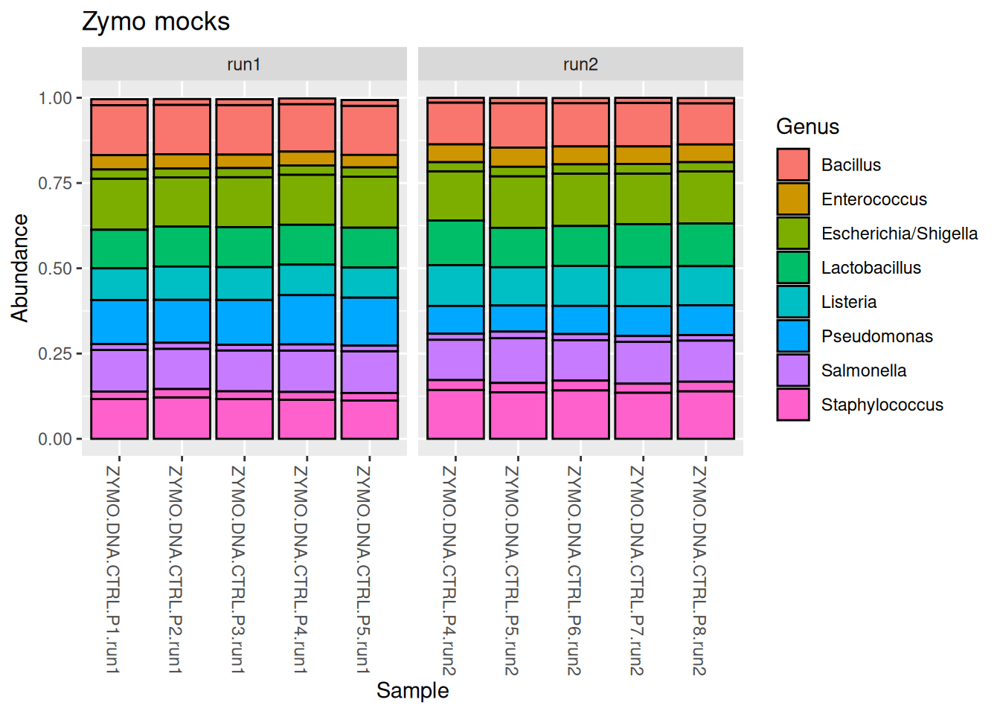
In the above plotted bars, each division is an ASV and each color is a Genus. So there are two Staphylococcus ASVs, for example.
We observe that for the Zymo genera (those we expect to be present), things look good - the stacked bars are consistent within and between batches. However …
ps_clean %>%
# Subset to control samples
subset_samples(., amplicon_type == "zymo_mock") %>%
# Transform counts to relative abundance
transform_sample_counts(., function(x) x/sum(x)) %>%
# Subset taxa to Mycoplasma or Sneathia
subset_taxa(., Genus == "Sneathia") %>%
# Plot the stacked bars
plot_bar(fill = "Species") +
# Add some ggplot2 layers
facet_wrap(.~instrument_run, scales = "free_x") +
labs(title = "Zymo mocks")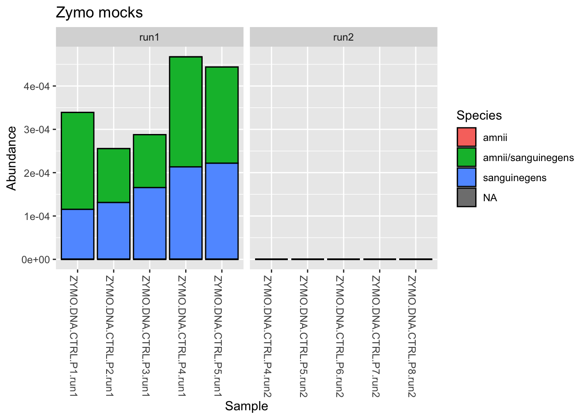
When we look at the non-Zymo genera (those we don’t expect to be present), which are at very low abundance, we see there may be sources of contamination that vary by batch. Reflect on what this might mean for our downstream analyses.
Study samples
For each body site, let’s compare the placebo and treatment groups at baseline (before intervention)
ps_clean %>%
# Subset to vaginal at baseline
subset_samples(., sample_type == "vaginal" &
time_point == "baseline") %>%
# Drop empty ASVs
filter_taxa(., function(x) sum(x > 0) > 0, prune = TRUE) %>%
# Transform counts to relative abundance
transform_sample_counts(., function(x) x/sum(x)) %>%
# Aggregate families
tax_glom(., taxrank = "Family") %>% # What happens to NA?
# Drop sporadic families
filter_taxa(., function(x) sum(x > 0.01) > 2, prune = TRUE) %>%
# Plot the stacked bars
plot_bar(x = "pid", fill = "Family") +
# Add some ggplot2 layers
facet_wrap(.~arm, scales = "free_x") +
# theme(legend.position = "none") +
labs(title = "vaginal, baseline")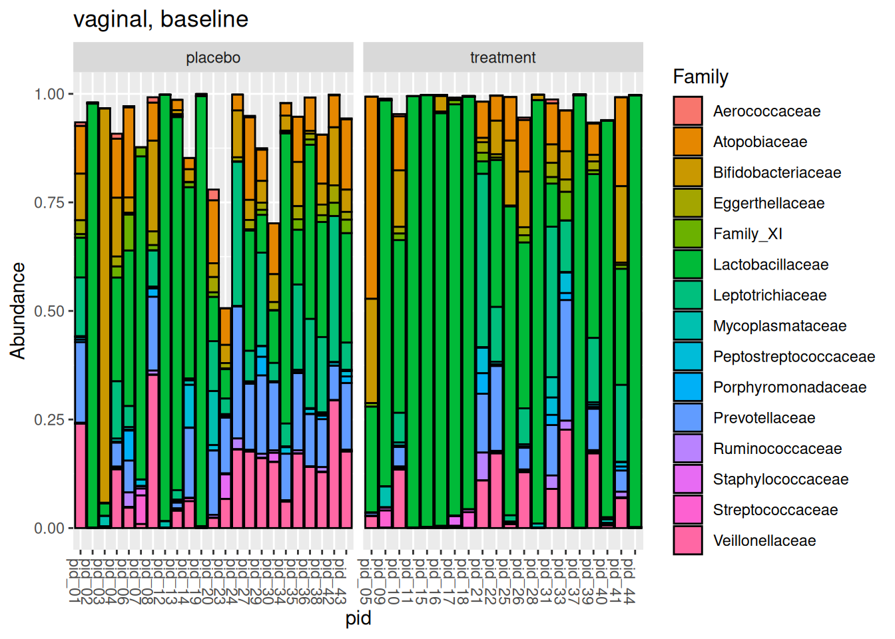
ps_clean %>%
# Subset to gut at baseline
subset_samples(., sample_type == "gut_biopsy" &
time_point == "baseline") %>%
# Drop empty ASVs
filter_taxa(., function(x) sum(x > 0) > 0, prune = TRUE) %>%
# Transform counts to relative abundance
transform_sample_counts(., function(x) x/sum(x)) %>%
# Aggregate families
tax_glom(., taxrank = "Family") %>% # What happens to NA?
# Drop sporadic families
filter_taxa(., function(x) sum(x > 0.01) > 2, prune = TRUE) %>%
# Plot the stacked bars
plot_bar(x = "pid", fill = "Family") +
# Add some ggplot2 layers
facet_wrap(.~arm, scales = "free_x") +
# theme(legend.position = "none") +
labs(title = "gut, baseline")
Do the arms look fairly similar prior to intervention? So, stacked bars for the study samples are a little unsatisfying, I think. A lot of work subsetting and aggregating for not much insight. What do you think?
But we can pick better questions for this plot_bar() function.
For example, we were curious if asv1, L. iners, appeared in the gut samples; in fact, it must, given its prevalence. This would be surprising (I think?) because L. iners is thought of as a vagina-specific organism.
So let’s look
ps_clean %>%
subset_samples(., sample_type == "gut_biopsy") %>%
transform_sample_counts(., function(x) x/sum(x)) %>%
subset_taxa(., Label == "asv1") %>%
plot_bar(x = "pid", fill = "instrument_run") +
facet_wrap(.~time_point, scales = "free_x") +
labs(title = "asv1 (L. iners) in gut samples",
x = "participant_id",
y = "asv1_frequency") +
theme(axis.text.x = element_blank())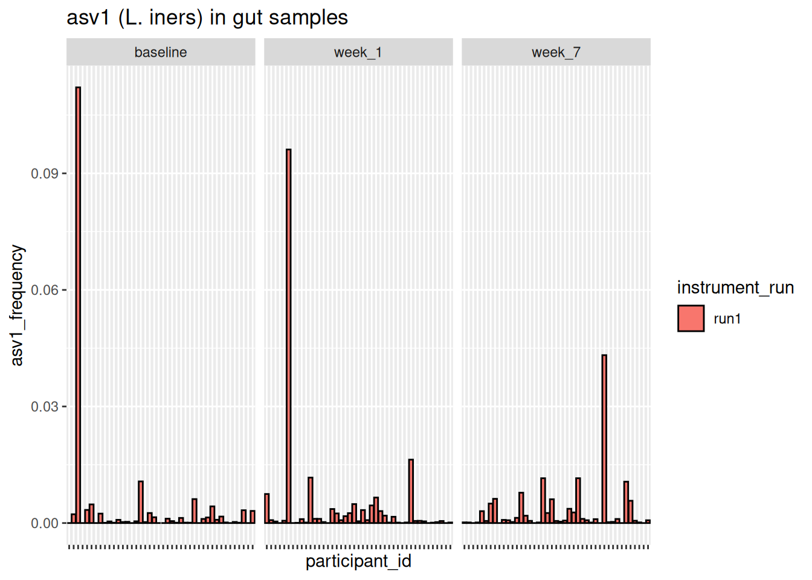
Yes, asv1 (L. iners) is present at low frequency in many of our gut_biopsy samples.
All of the gut samples were sequenced in run1. Do the zymo mocks from this batch (run1), which are not expected to contain L. iners, also harbor low levels of asv1?
ps_clean %>%
subset_samples(., amplicon_type == "zymo_mock") %>%
transform_sample_counts(., function(x) x/sum(x)) %>%
subset_taxa(., Label == "asv1") %>%
plot_bar() +
facet_wrap(.~instrument_run, scales = "free_x") +
labs(title = "asv1 (L. iners) in zymo mocks",
x = "amplicon_sample_id",
y = "asv1_frequency")
Indeed, they do. So what do we think is going on here with asv1 (L. iners)? Where did it come from? What other samples, if any, were included in this batch? What might we do differently next time?
4. Alpha diversity
Alpha diversity metrics are crucial in ecology and microbiome studies because they provide insights into the richness and evenness of species within a single ecosystem or community sample. This allows researchers to understand:
Species Richness: How many different types of species exist in a single community? This can be particularly important in assessing the overall biodiversity.
Species Evenness: How evenly these species are distributed within the community. In other words, whether a few species dominate the community, or whether many species coexist in relatively similar numbers.
The data can be used to compare different communities or to see how a community changes over time in response to various factors such as perturbation, disease, or interventions.
In general, various alpha diversity metrics differ in whether, and to what degree, they emphasize richness or evenness.
The phyloseq package provides an all-in-one function plot_richness() that both calculates and plots an array of alpha diversity measures. But to be honest, I don’t often use it, opting instead to calculate the metrics using the estimate_richness() function. This places them in a dataframe, to which we can add our sample data and create plots using ggplot2.
Look at the documentation by calling ?estimate_richness at the console prompt. Which alpha diversity measures are available to us within the function estimate_richness()?
Note: Some estimates of alpha diversity (e.g., Chao1, ACE) must be calculated on unfiltered data. Specifically, singletons should be present. (That is, ASVs that appear only once (count of 1) within samples should be present.) This is because singletons are considered as a term in these estimates. Does our data contain singletons?
sum(otu_table(ps_clean) == 1)[1] 42Yes, but not many. (Think about how dada2 works and why this might be.) We won’t use Chao1 or ACE here, but it’s still a good idea to calculate whatever alpha diversity measure you choose using relatively unfiltered data.
Let’s calculate alpha diversity using three different measures. The result will return as a dataframe. Then let’s join our alpha diversity data to our sample data.
measures <- c("Observed", "Shannon", "Simpson")
alpha_df <- ps_clean %>%
estimate_richness(measures = measures) %>%
rownames_to_column(var = "amplicon_sample_id") %>%
left_join(sample_df, by = "amplicon_sample_id")
alpha_df %>%
head() %>% pander()| amplicon_sample_id | Observed | Shannon | Simpson | amplicon_type |
|---|---|---|---|---|
| GUT0001 | 126 | 3.286 | 0.9296 | study_sample |
| GUT0002 | 112 | 3.454 | 0.9274 | study_sample |
| GUT0003 | 117 | 3.277 | 0.9403 | study_sample |
| GUT0004 | 105 | 3.163 | 0.9113 | study_sample |
| GUT0005 | 122 | 3.265 | 0.9067 | study_sample |
| GUT0006 | 239 | 4.333 | 0.9764 | study_sample |
| instrument_run | reads_out | pid | arm | time_point | sample_type |
|---|---|---|---|---|---|
| run1 | 191197 | pid_32 | treatment | week_1 | gut_biopsy |
| run1 | 17206 | pid_14 | placebo | week_7 | gut_biopsy |
| run1 | 112769 | pid_01 | placebo | baseline | gut_biopsy |
| run1 | 25242 | pid_06 | placebo | baseline | gut_biopsy |
| run1 | 50533 | pid_09 | treatment | week_1 | gut_biopsy |
| run1 | 142644 | pid_18 | treatment | week_7 | gut_biopsy |
Now let’s make some plots comparing alpha diversity across samples of interest.
Zymo mocks
In the absence of any batch effect, we would expect no difference in alpha diversity between mocks from run1 vs run2
set.seed(123) # For reproducibility
alpha_df %>%
filter(amplicon_type == "zymo_mock") %>%
pivot_longer(cols = all_of(measures),
names_to = "adiv_measure",
values_to = "adiv_value") %>%
ggplot(aes(x = instrument_run, y = adiv_value)) +
geom_boxplot(alpha = 0.5, outlier.shape = NA) +
geom_jitter(width = 0.2) +
facet_wrap(.~adiv_measure, scales = "free_y")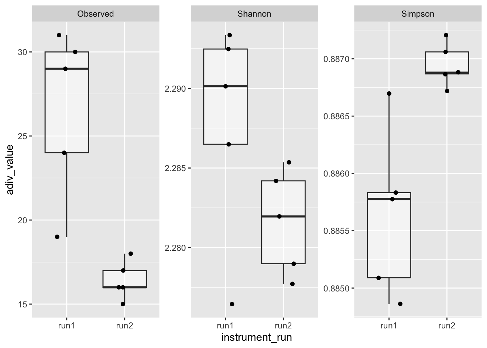
However, they are different, suggesting a batch effect. There seem to be “extra” taxa in mocks from run1 (keeping in mind that the Zymo mock contains eight bacterial species). We could discuss and test whether rarefying the data or aggregating taxa change this result.
Note: The traditional Simpson diversity index represents the probability that two individuals randomly selected from a sample will belong to the same species. Higher values indicate lower diversity. Therefore, it is common to transform Simpson to 1 - Simpson. How would you modify the last chunk to plot 1 - Simpson in place of Simpson?
Study samples
If our allocation of participants to study arms was random, we might expect no difference in alpha diversity between the placebo and treatment groups at baseline (before the study intervention). Is this true?
First we plot
library(ggbeeswarm) # For function geom_quasirandom()alpha_df %>%
filter(time_point == "baseline") %>%
pivot_longer(cols = all_of(measures),
names_to = "adiv_measure",
values_to = "adiv_value") %>%
ggplot(aes(x = arm, y = adiv_value)) +
geom_boxplot(alpha = 0.4, outlier.shape = NA) +
geom_quasirandom(stroke = FALSE, width = 0.3) +
facet_wrap(sample_type~adiv_measure, scales = "free_y") +
labs(title = "baseline (pre-intervention)")
We notice some small differences. If these are of interest or concern to us, we can follow up. For example, for the baseline vaginal Shannon diversity index, we might ask whether the difference between groups (arms) was significant?
Let’s use a Wilcoxon test using the function wilcox_test() from the package rstatix. (It’s the same as base R’s wilcox.test().)
alpha_df %>%
filter(time_point == "baseline",
sample_type == "vaginal") %>%
wilcox_test(Shannon ~ arm, paired = FALSE) %>% pander()| .y. | group1 | group2 | n1 | n2 | statistic | p |
|---|---|---|---|---|---|---|
| Shannon | placebo | treatment | 23 | 20 | 287 | 0.171 |
At baseline, prior to intervention, there was no significant difference between the two groups (arms) in terms of vaginal bacterial diversity, as measured using the Shannon diversity index (Wilcoxon rank sum test; P = 0.171).
In the chunk above, change the time_point to “week_1” (that’s after intervention) and re-run the code. What do you notice? How about for “week_7”?
Let’s visualize the trends. We’ll use the function stat_compare_means() from the package ggpubr to compare between arms at each time point using the same type of test we ran above (a Wilcoxon rank sum test).
library(ggpubr)Let’s start with the vaginal data
alpha_df %>%
filter(sample_type == "vaginal") %>%
ggplot(aes(x = arm, y = Shannon)) +
geom_boxplot(alpha = 0.4, outlier.shape = NA) +
geom_quasirandom(stroke = FALSE, width = 0.2) +
facet_wrap(.~time_point) +
stat_compare_means(method = "wilcox.test", paired = FALSE) +
labs(title = "Vaginal samples",
x = "Study arm",
y = "Shannon diversity index")
How would you describe these trends?
What do we notice if we modify the chunk above to perform the same analysis for gut samples? Or for different measures of alpha diversity?
Finally, there’s an alternative way to view these data, that is, viewing it as longitudinal data. In this view, participants are compared to themselves prior to intervention.
Let’s visualize
alpha_df %>%
drop_na() %>%
ggplot(aes(x = time_point, y = Shannon)) +
geom_line(aes(group = pid), alpha = 0.5) +
geom_point(stroke = FALSE) +
facet_grid(sample_type ~ arm, scales = "free") +
labs(x = "Timepoint",
y = "Shannon diversity index")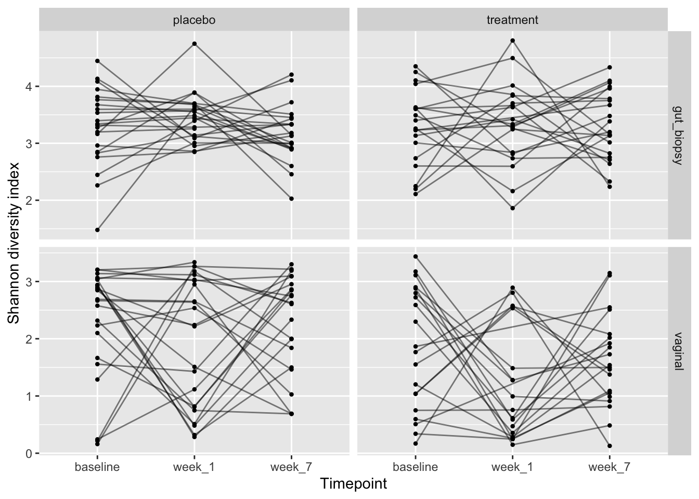
Individuals are dynamic!
As a follow-up, we might be interested in comparing week_1 to baseline within arms using a paired test so that participants are compared to themselves.
Here’s an example
# Get and arrange the data
test_df <- alpha_df %>%
filter(arm == "treatment",
time_point != "week_7",
sample_type == "vaginal") %>%
group_by(pid) %>% filter(n() == 2) %>% ungroup() %>% # Retain complete cases
arrange(pid, time_point) # Important step if paired tests will be performed# Display summary statistics
test_df %>%
group_by(time_point) %>%
get_summary_stats(Shannon, type = "five_number") %>% pander()| time_point | variable | n | min | max | q1 | median | q3 |
|---|---|---|---|---|---|---|---|
| baseline | Shannon | 18 | 0.169 | 3.438 | 1.038 | 2.033 | 2.859 |
| week_1 | Shannon | 18 | 0.148 | 2.893 | 0.301 | 0.875 | 2.272 |
# Do a paired test using base R
wilcox.test(x = test_df$Shannon[test_df$time_point == "baseline"],
y = test_df$Shannon[test_df$time_point == "week_1"],
paired = TRUE, alternative = "two.sided")
Wilcoxon signed rank exact test
data: test_df$Shannon[test_df$time_point == "baseline"] and test_df$Shannon[test_df$time_point == "week_1"]
V = 125, p-value = 0.08977
alternative hypothesis: true location shift is not equal to 0# But of course there's also the friendlier way
test_df %>%
wilcox_test(Shannon ~ time_point, paired = TRUE) %>% pander()| .y. | group1 | group2 | n1 | n2 | statistic | p |
|---|---|---|---|---|---|---|
| Shannon | baseline | week_1 | 18 | 18 | 125 | 0.0898 |
How would you express this result? If you modified the chunks above to examine the placebo arm (or week_7, or gut samples), what do you find?
5. Beta diversity
Variation (sometimes called turnover) in species composition over space and time; in relation to any variable of interest such as perturbation, disease, or intervention
Beta diversity refers to between-sample diversity. At its core are measures of how much diversity is shared (or not shared) between communities. These are measures of pairwise resemblance; referred to as similarity, dissimilarity, or distance metrics. These measures differ in how they are calculated; whether and to what degree they consider abundance information; and whether they treat taxa as independent or (phylogenetically) related units. Different measures emphasize different aspects of the data and therefore may give different results. Insight may be gained from these differing results.
When we calculate distances (i.e., between-sample diversity) among many, many pairs of samples, we typically can’t ascertain directly (by plotting or by eye) the main patterns or structures in the data. To explore these patterns or structures, we employ unsupervised methods that reduce this “high-dimensionality”. These methods include unconstrained ordination and clustering. They are considered unsupervised because the goal is not to predict or explain the importance of one particular variable, but to visualize and understand the primary sources of variation within the data, whatever they might be. In an ordination plot, similar samples are placed closer together, and dissimilar samples are placed further away.
The phyloseq package provides functions for calculating measures of pairwise resemblance and performing ordination. Core functions include distance(), ordinate() and plot_ordination(). Please see the documentation for the function vegdist() from the vegan package for details on many dissimilarity measures.
Steps in a typical exploratory beta-diversity workflow might include:
- Subet samples and/or filter taxa
- Transform count data (if necessary or desired)
- Calculate distances
- Ordinate
- Plot
- Repeat using alternative distance measures or ordination methods
Zymo mocks
We can demo this very quickly using our Zymo mocks.
If batch effects were negligible, then we’d expect little separation by batch. In other words, we do not expect strong clustering by batch.
First we’ll use the Jaccard dissimilarity measure, which is a binary measure, meaning it considers only presence-absence. And as an ordination method we’ll use principal coordinate analysis (PCoA; also called multidimensional scaling, or MDS).
ps_clean %>%
subset_samples(., amplicon_type == "zymo_mock") %>%
filter_taxa(., function(x) sum(x > 0) > 0, prune = TRUE) %>%
ordinate(., distance = "jaccard", binary = TRUE, method = "MDS") %>%
plot_ordination(ps_clean, ., type = "samples", color = "instrument_run")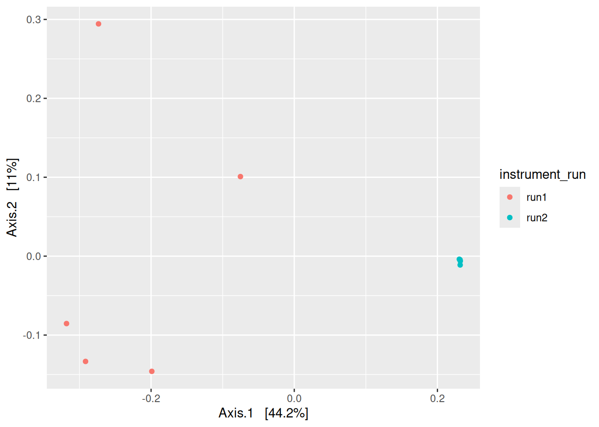
Again, we see evidence of a batch effect. At this point, we’re not surprised - we’ve seen evidence of this in our bar plots and in our alpha diversity plots.
What happens to the plot above if we change the distance metric to Bray-Curtis (distance = "bray"), a quantitative measure, meaning that it takes abundance information into account? (Don’t forget to remove or set to false the binary argument.) Does the pattern change? Does our conclusion change?
You may have noticed several distance metrics listed under the function vegan::vegdist() that aren’t available in phyloseq. One of them is the robust Aitchison distance. This metric is a popular choice among microbiome researchers because of the way it handles the compositionality of our data using a centered log-ratio (CLR) transformation. This is especially important when we have relatively few taxa, such as after agglomeration (aggregation) at high taxonomic level (e.g., Phylum or Class). Here’s an example using this distance metric.
library(vegan)# Get the count table (what vegan calls the "community data matrix")
zym_tab <- ps_clean %>%
subset_samples(., amplicon_type == "zymo_mock") %>%
filter_taxa(., function(x) sum(x > 0) > 0, prune = TRUE) %>%
otu_table()
# Use vegan's vegdist() to calculate a robust Aitchison distance matrix
ait_dist_zym <- vegdist(x = zym_tab, method = "robust.aitchison")
# Input this distance matrix into phyloseq's ordinate() and plot
ps_clean %>%
ordinate(., distance = ait_dist_zym, method = "MDS") %>%
plot_ordination(ps_clean, ., type = "samples", color = "instrument_run")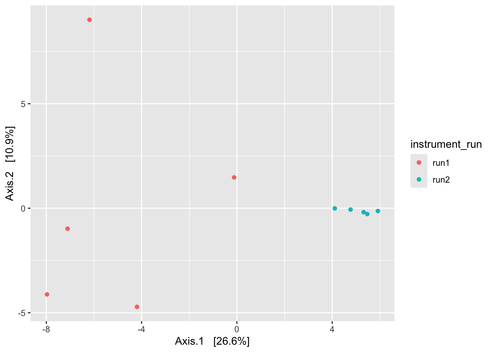
Looks … familiar.
Note that plot_ordination() includes an argument justDF that outputs the data underlying the plot rather than the plot itself. This can be helpful if you’d prefer to customize your plot using a different package.
# Highlight `justDF` argument
ps_clean %>%
ordinate(., distance = ait_dist_zym, method = "MDS") %>%
plot_ordination(ps_clean, ., axes = c(1:3), justDF = TRUE) %>%
select(Axis.1:reads_out) %>% head(n = 3) %>% pander()| Axis.1 | Axis.2 | Axis.3 | amplicon_type | |
|---|---|---|---|---|
| ZYMO.DNA.CTRL.P1.run1 | -7.108 | -0.9808 | -0.5162 | zymo_mock |
| ZYMO.DNA.CTRL.P2.run1 | -7.97 | -4.122 | 0.02995 | zymo_mock |
| ZYMO.DNA.CTRL.P3.run1 | -4.194 | -4.718 | 0.2392 | zymo_mock |
| instrument_run | reads_out | |
|---|---|---|
| ZYMO.DNA.CTRL.P1.run1 | run1 | 147436 |
| ZYMO.DNA.CTRL.P2.run1 | run1 | 144714 |
| ZYMO.DNA.CTRL.P3.run1 | run1 | 114688 |
Study samples
The next three plots should give a taste of how clustering patterns may change given, e.g., the choice of distance metric. The first is binary Jaccard, the second is Bray-Curtis, and the third is robust Aitchison.
ps_clean %>%
subset_samples(., !is.na(sample_type)) %>%
filter_taxa(., function(x) sum(x > 0) > 0, prune = TRUE) %>%
ordinate(., distance = "jaccard", binary = TRUE, method = "MDS") %>%
plot_ordination(ps_clean, ., type = "samples", color = "sample_type") +
labs(title = "binary Jaccard")
ps_clean %>%
subset_samples(., !is.na(sample_type)) %>%
filter_taxa(., function(x) sum(x > 0) > 0, prune = TRUE) %>%
ordinate(., distance = "bray", binary = FALSE, method = "MDS") %>%
plot_ordination(ps_clean, ., type = "samples", color = "sample_type") +
labs(title = "Bray-Curtis")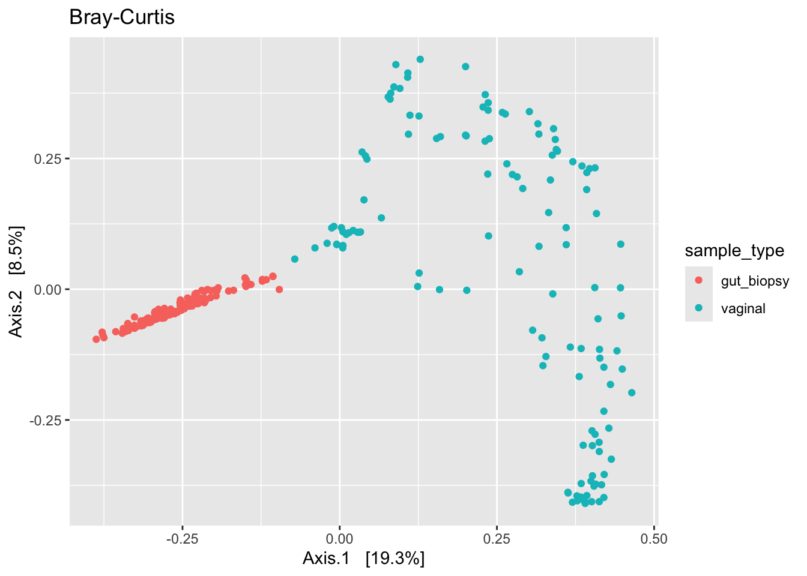
sam_tab <- ps_clean %>%
subset_samples(., !is.na(sample_type)) %>%
filter_taxa(., function(x) sum(x > 0) > 0, prune = TRUE) %>%
otu_table()
ait_dist_sam <- vegdist(x = sam_tab, method = "robust.aitchison")
ps_clean %>%
ordinate(., distance = ait_dist_sam, method = "MDS") %>%
plot_ordination(ps_clean, ., type = "samples", color = "sample_type") +
labs(title = "robust Aitchison")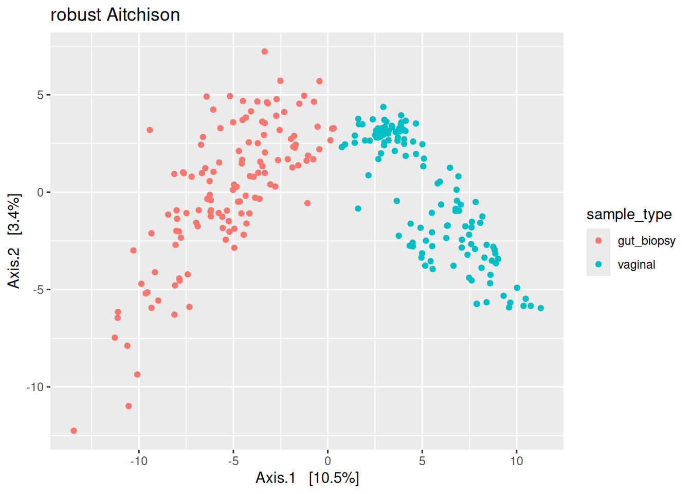
We see some different shapes. Nonetheless, all plots suggest that the primary source of variation in our data is by body site (gut versus vaginal). However, we can’t rule out that what we see here is driven by a batch effect. So to be sure, we’d need to address that issue – by correcting for the batch effect or by regenerating the data.
Try re-running the three plots with different taxa filtering or subsetting. Or using different distance measures. Or different ordination methods (e.g., NMDS).
6. Let’s practice!
Let’s practice what we’ve learned using some new data. I’ve provided two “practice” phyloseq objects, both based on published data.
One is gut (stool) microbiome data from mildly lactose-intolerant adults sampled over time as they eliminated and then reintroduced milk into their diet (dairy.ps).
The other is vaginal microbiome data from women sampled soon before and soon after giving birth, some via vaginal delivery and others via c-section (delivery.ps).
Manage paths
Show paths to the data we intend to analyze
fs::dir_ls(here("materials/2-workshop2/4-16s-pt1/data"))/Users/jelsherbini/dev/durban-data-science-for-biology/materials/2-workshop2/4-16s-pt1/data/instructional
/Users/jelsherbini/dev/durban-data-science-for-biology/materials/2-workshop2/4-16s-pt1/data/practiceCreate an object containing the path to the practice data
pt_path <- file.path(here("materials/2-workshop2/4-16s-pt1/data/practice/"))
pt_path[1] "/Users/jelsherbini/dev/durban-data-science-for-biology/materials/2-workshop2/4-16s-pt1/data/practice/"List the files we intend to load
list.files(pt_path)[1] "dairy_phyloseq.rds" "delivery_phyloseq.rds"Load data
Let’s load the practice data
ps_dairy <- readRDS(paste0(pt_path, "dairy_phyloseq.rds"))
ps_deliv <- readRDS(paste0(pt_path, "delivery_phyloseq.rds"))Dairy dataset
Produce a concise summary of ps_dairy
ps_dairyphyloseq-class experiment-level object
otu_table() OTU Table: [ 3001 taxa and 434 samples ]
sample_data() Sample Data: [ 434 samples by 4 sample variables ]
tax_table() Taxonomy Table: [ 3001 taxa by 6 taxonomic ranks ]Access the sample variables for ps_dairy
sample_variables(ps_dairy)[1] "participant_id" "previous_diet" "study_day" "study_phase" Review the study design by making a plot; use the variables participant_id, study_day, and study_phase
ps_dairy %>%
sample_data() %>%
ggplot(aes(x = study_day, y = participant_id, color = study_phase)) +
geom_point() +
labs(title = "dairy study; stool samples")
Question: What is the primary source of variation among the samples in ps_dairy? Is it participant_id or study_phase? Hint: Begin with binary Jaccard
ps_dairy %>%
ordinate(., distance = "jaccard", binary = TRUE, method = "MDS") %>%
plot_ordination(ps_dairy, ., type = "samples", color = "participant_id") +
labs(title = "binary Jaccard")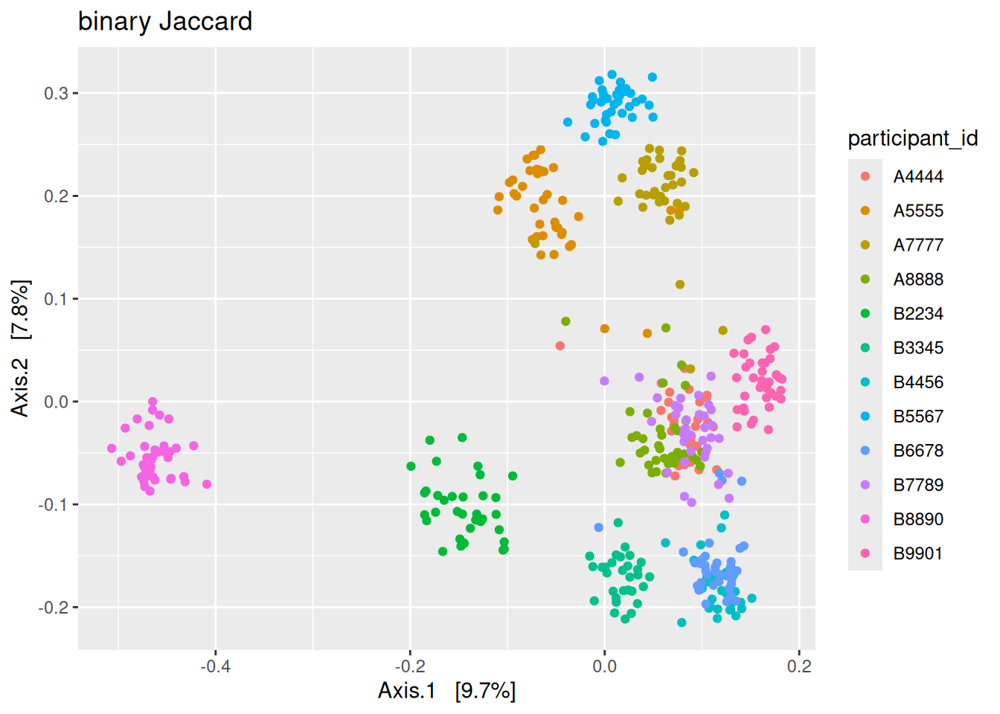
ps_dairy %>%
ordinate(., distance = "jaccard", binary = TRUE, method = "MDS") %>%
plot_ordination(ps_dairy, ., type = "samples", color = "study_phase") +
labs(title = "binary Jaccard")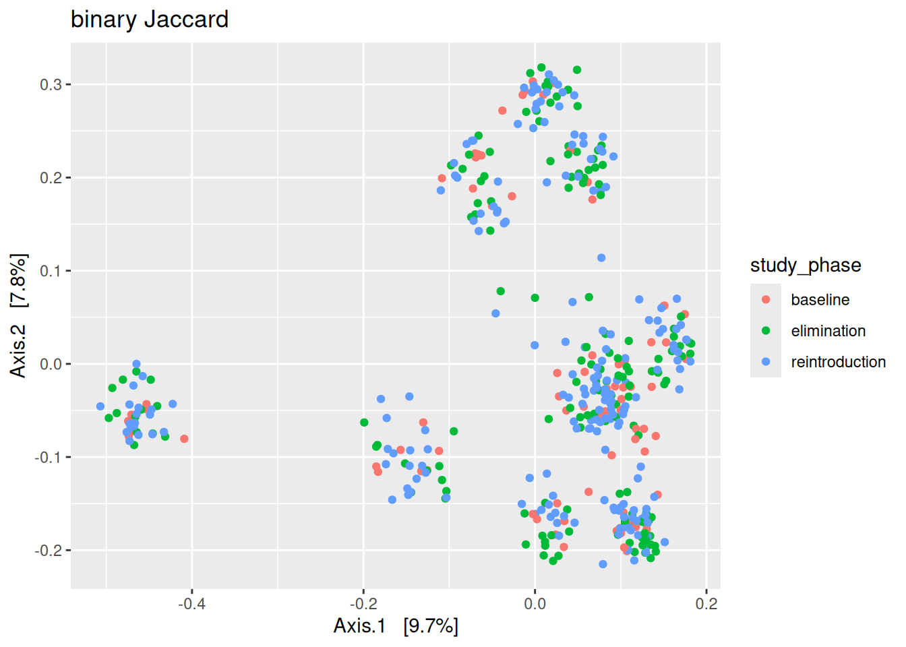
Your answer?
Delivery dataset
Produce a concise summary of ps_deliv
ps_delivphyloseq-class experiment-level object
otu_table() OTU Table: [ 1551 taxa and 140 samples ]
sample_data() Sample Data: [ 140 samples by 7 sample variables ]
tax_table() Taxonomy Table: [ 1551 taxa by 12 taxonomic ranks ]
phy_tree() Phylogenetic Tree: [ 1551 tips and 1550 internal nodes ]Access the sample variables for ps_deliv
sample_variables(ps_deliv)[1] "pregnancy_id" "day_vs_delivery" "status"
[4] "delivery_mode" "sp_lacto_crispatus" "sp_lacto_gasseri"
[7] "sp_lacto_iners" Review the study design by making a plot; use the variables pregnancy_id, day_vs_delivery, and status; facet by delivery_mode
ps_deliv %>%
sample_data() %>%
ggplot(aes(x = day_vs_delivery, y = pregnancy_id, color = fct_rev(status))) +
geom_vline(xintercept = 0, linetype = 2, linewidth = 0.3) +
geom_point() +
facet_wrap(~delivery_mode, scales = "free_y") +
labs(title = "delivery study; vaginal samples",
color = "status")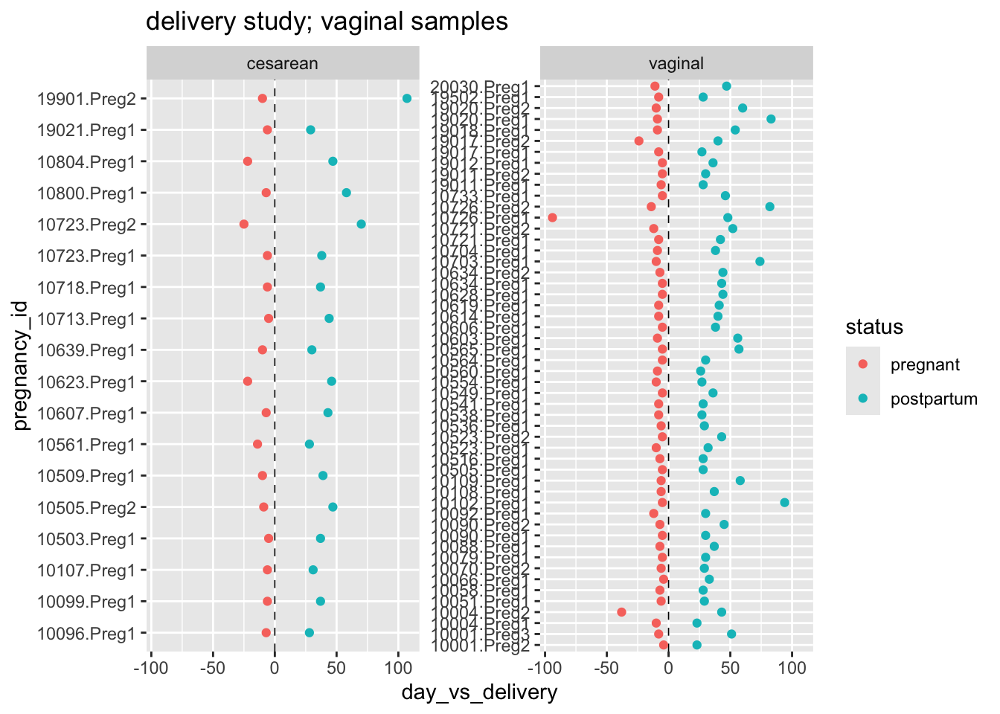
Question: Does the Shannon diversity index change with delivery? Does this depend on delivery mode?
# Calculate Shannon
shan_del <- ps_deliv %>%
estimate_richness(measures = "Shannon") %>%
rownames_to_column(var = "sample_id")
# Access the sample data and attach Shannon
sam_shan_del <- ps_deliv %>%
sample_data() %>% data.frame() %>%
rownames_to_column(var = "sample_id") %>%
left_join(shan_del, by = "sample_id") %>%
group_by(pregnancy_id) %>% filter(n() == 2) %>% ungroup() %>%
arrange(pregnancy_id, status)
# Plot
sam_shan_del %>%
ggplot(aes(x = fct_rev(status), y = Shannon)) +
geom_boxplot(alpha = 0.4, outlier.shape = NA) +
geom_quasirandom(stroke = FALSE, width = 0.3) +
facet_wrap(~delivery_mode) +
stat_compare_means(method = "wilcox.test", paired = TRUE) +
labs(x = "Pregnancy status",
y = "Shannon diversity index") +
theme_bw()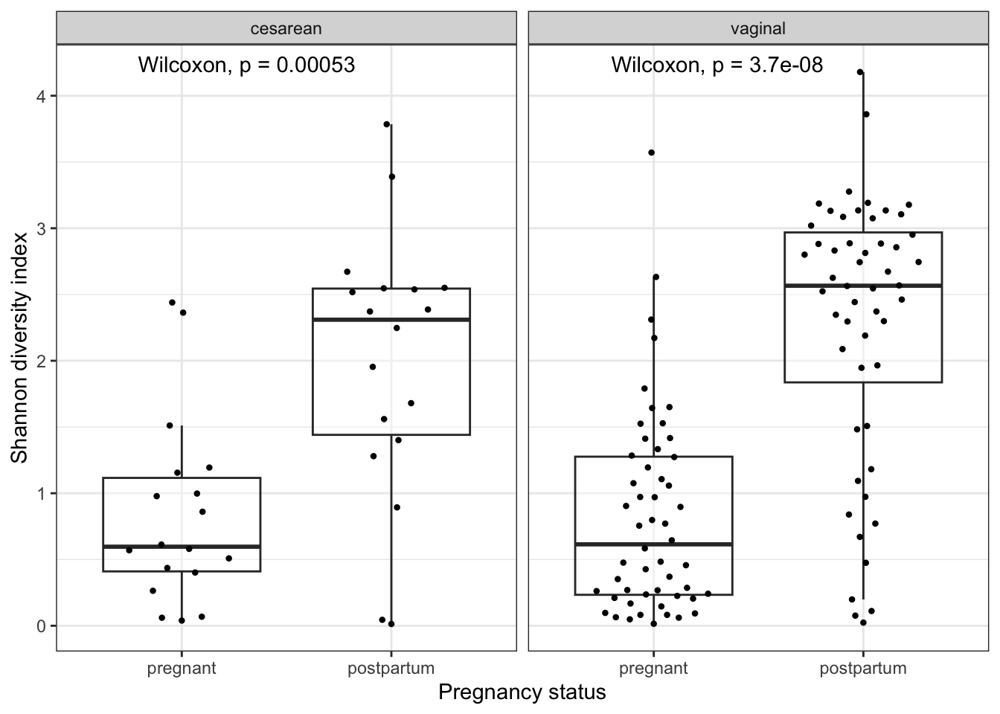
Your answer?
Bonus question: Try ordinating the samples in ps_deliv using Bray-Curtis distances. Color by the relative abundance of Lactobacillus crispatus, which I’ve included as a variable within the sample data (sp_lacto_crispatus), and also facet by status.
Note that dominant taxa are strong drivers of clustering among vaginal samples. Can we “turn down the volume” on these dominant taxa so we can see more of what’s going on here? Try applying a square-root transformation before the ordination step.
ps_deliv %>%
transform_sample_counts(., function(x) x^(1/2)) %>%
ordinate(., distance = "bray", binary = FALSE, method = "MDS") %>%
plot_ordination(ps_deliv, ., type = "samples", color = "sp_lacto_crispatus") +
facet_wrap(~fct_rev(status))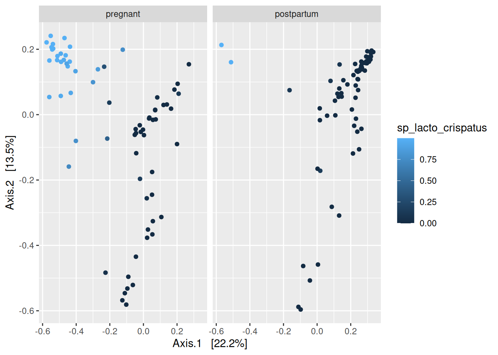
Just as we transferred our alpha diversity measures to a dataframe, one can also transfer any number of taxon relative abundances to a dataframe as well.
That’s it for now. Nice work!! 🤓
7. Reproducibility receipt
sessionInfo()R version 4.3.3 (2024-02-29)
Platform: aarch64-apple-darwin20 (64-bit)
Running under: macOS Sonoma 14.4.1
Matrix products: default
BLAS: /Library/Frameworks/R.framework/Versions/4.3-arm64/Resources/lib/libRblas.0.dylib
LAPACK: /Library/Frameworks/R.framework/Versions/4.3-arm64/Resources/lib/libRlapack.dylib; LAPACK version 3.11.0
locale:
[1] en_US.UTF-8/en_US.UTF-8/en_US.UTF-8/C/en_US.UTF-8/en_US.UTF-8
time zone: Africa/Johannesburg
tzcode source: internal
attached base packages:
[1] stats graphics grDevices utils datasets methods base
other attached packages:
[1] vegan_2.6-4 lattice_0.22-6 permute_0.9-7 ggpubr_0.6.0
[5] ggbeeswarm_0.7.2 here_1.0.1 pander_0.6.5 rstatix_0.7.2
[9] magrittr_2.0.3 lubridate_1.9.3 forcats_1.0.0 stringr_1.5.1
[13] dplyr_1.1.4 purrr_1.0.2 readr_2.1.5 tidyr_1.3.1
[17] tibble_3.2.1 ggplot2_3.5.1 tidyverse_2.0.0 phyloseq_1.46.0
loaded via a namespace (and not attached):
[1] ade4_1.7-22 tidyselect_1.2.1 vipor_0.4.7
[4] farver_2.1.1 Biostrings_2.70.3 bitops_1.0-7
[7] fastmap_1.1.1 RCurl_1.98-1.14 digest_0.6.35
[10] timechange_0.3.0 lifecycle_1.0.4 cluster_2.1.6
[13] survival_3.5-8 compiler_4.3.3 rlang_1.1.5
[16] tools_4.3.3 igraph_2.0.3 utf8_1.2.4
[19] yaml_2.3.8 data.table_1.15.4 ggsignif_0.6.4
[22] knitr_1.49 labeling_0.4.3 htmlwidgets_1.6.4
[25] plyr_1.8.9 abind_1.4-5 withr_3.0.0
[28] BiocGenerics_0.48.1 grid_4.3.3 stats4_4.3.3
[31] fansi_1.0.6 multtest_2.58.0 biomformat_1.30.0
[34] colorspace_2.1-1 Rhdf5lib_1.24.2 scales_1.3.0
[37] iterators_1.0.14 MASS_7.3-60.0.1 cli_3.6.3
[40] rmarkdown_2.29 crayon_1.5.2 generics_0.1.3
[43] rstudioapi_0.16.0 reshape2_1.4.4 tzdb_0.4.0
[46] ape_5.8 rhdf5_2.46.1 zlibbioc_1.48.2
[49] splines_4.3.3 parallel_4.3.3 XVector_0.42.0
[52] vctrs_0.6.5 Matrix_1.6-5 carData_3.0-5
[55] jsonlite_1.8.8 car_3.1-2 IRanges_2.36.0
[58] hms_1.1.3 S4Vectors_0.40.2 beeswarm_0.4.0
[61] foreach_1.5.2 glue_1.8.0 codetools_0.2-20
[64] stringi_1.8.3 gtable_0.3.4 GenomeInfoDb_1.38.8
[67] munsell_0.5.1 pillar_1.9.0 htmltools_0.5.8.1
[70] rhdf5filters_1.14.1 GenomeInfoDbData_1.2.11 R6_2.5.1
[73] rprojroot_2.0.4 evaluate_0.23 Biobase_2.62.0
[76] backports_1.4.1 broom_1.0.5 Rcpp_1.0.12
[79] nlme_3.1-164 mgcv_1.9-1 xfun_0.50
[82] fs_1.6.5 pkgconfig_2.0.3